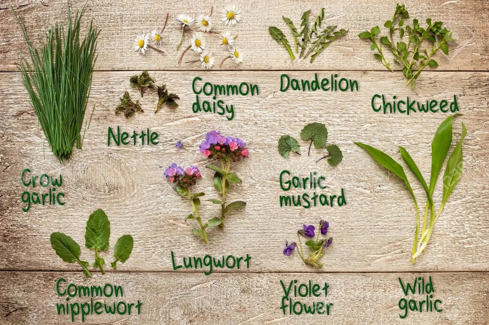

Introduction
Info about alternate food resources
(Food and Agriculture Organization of the United Nations, 2009)
In 2009, the Expert Meeting organized by FAO predicted an increase of around
34% of the world population by 2050, associated with an increase of 70% in food production demand (Food
and Agriculture Organization of the United Nations, 2009).
Continue reading
Wild edible plants
edible plants with good nutional values.
healthy eating
Consumers have shown great interest and concern about their health and quality of life
through healthy eating. In 2019, the EAT-Lancet initiative was launched by The EAT-Lancet Commission on
Food, Planet, Health, focusing on the 17 goals of the 2030 Agenda,
Continue reading

Pseudocereal
And grain
excellent nutritional composition
Several plant foods have been extensively studied and introduced into the
human
diet as unconventional protein sources due to their excellent nutritional composition. Among these
foods,
sorghum and the so called pseudocereals amaranth, quinoa, and chia have amino acid
Continue reading
Edilble flowers
Edible flowers as conventional food
Edible
Besides their ornamental use, some flowers are recognized as edible and part of
non-conventional foods. Edible flowers should be more exploited due to their nutritional and sensory
contribution to foodstuff. The encouragement and expansion of the use of edible flowers
Continue reading
Pot-honey and Pot-pollen
Products from stingless bee breeding
(Meliponiculture)
Everyone recognizes apiculture; however, we have another kind of bee that
produces
honey, pollen, propolis, and cerumen with high nutritional and economic potentials. Stingless bees
(Hymenoptera, Apidae, Meliponini) have a non-functional sting (vestigial),
Continue reading
Edible insects
Entomophagy
good source of protein
The United Nations (UN) projects that the world population will reach 9.7 billion
people
by 2050 (United Nations, 2019); consequently, there will be a proportional increase in the demand for
proteins of good nutritional quality, being the edible insects one of the alternatives to conventional
products of animal origin.
Continue reading